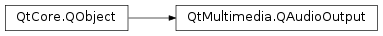

QAudioOutput¶
Synopsis¶
Functions¶
- def
bufferSize() - def
bytesFree() - def
category() - def
elapsedUSecs() - def
error() - def
format() - def
notifyInterval() - def
periodSize() - def
processedUSecs() - def
reset() - def
resume() - def
setBufferSize(bytes) - def
setCategory(category) - def
setNotifyInterval(milliSeconds) - def
setVolume(arg__1) - def
start() - def
start(device) - def
state() - def
stop() - def
suspend() - def
volume()
Signals¶
- def
notify() - def
stateChanged(state)
Detailed Description¶
The
PySide2.QtMultimedia.QAudioOutputclass provides an interface for sending audio data to an audio output device.You can construct an audio output with the system’s
default audio output device. It is also possible to createPySide2.QtMultimedia.QAudioOutputwith a specificPySide2.QtMultimedia.QAudioDeviceInfo. When you create the audio output, you should also send in thePySide2.QtMultimedia.QAudioFormatto be used for the playback (see thePySide2.QtMultimedia.QAudioFormatclass description for details).To play a file:
Starting to play an audio stream is simply a matter of calling
PySide2.QtMultimedia.QAudioOutput.start()with aPySide2.QtCore.QIODevice.PySide2.QtMultimedia.QAudioOutputwill then fetch the data it needs from the io device. So playing back an audio file is as simple as:QFile sourceFile; // class member. QAudioOutput* audio; // class member. { sourceFile.setFileName("/tmp/test.raw"); sourceFile.open(QIODevice::ReadOnly); QAudioFormat format; // Set up the format, eg. format.setSampleRate(8000); format.setChannelCount(1); format.setSampleSize(8); format.setCodec("audio/pcm"); format.setByteOrder(QAudioFormat::LittleEndian); format.setSampleType(QAudioFormat::UnSignedInt); QAudioDeviceInfo info(QAudioDeviceInfo::defaultOutputDevice()); if (!info.isFormatSupported(format)) { qWarning() << "Raw audio format not supported by backend, cannot play audio."; return; } audio = new QAudioOutput(format, this); connect(audio, SIGNAL(stateChanged(QAudio::State)), this, SLOT(handleStateChanged(QAudio::State))); audio->start(&sourceFile); }The file will start playing assuming that the audio system and output device support it. If you run out of luck, check what’s up with the
PySide2.QtMultimedia.QAudioOutput.error()function.After the file has finished playing, we need to stop the device:
void AudioOutputExample::handleStateChanged(QAudio::State newState) { switch (newState) { case QAudio::IdleState: // Finished playing (no more data) audio->stop(); sourceFile.close(); delete audio; break; case QAudio::StoppedState: // Stopped for other reasons if (audio->error() != QAudio::NoError) { // Error handling } break; default: // ... other cases as appropriate break; } }At any given time, the
PySide2.QtMultimedia.QAudioOutputwill be in one of four states: active, suspended, stopped, or idle. These states are described by theQAudio.Stateenum. State changes are reported through thePySide2.QtMultimedia.QAudioOutput.stateChanged()signal. You can use this signal to, for instance, update the GUI of the application; the mundane example here being changing the state of aplay/pausebutton. You request a state change directly withPySide2.QtMultimedia.QAudioOutput.suspend(),PySide2.QtMultimedia.QAudioOutput.stop(),PySide2.QtMultimedia.QAudioOutput.reset(),PySide2.QtMultimedia.QAudioOutput.resume(), andPySide2.QtMultimedia.QAudioOutput.start().While the stream is playing, you can set a notify interval in milliseconds with
PySide2.QtMultimedia.QAudioOutput.setNotifyInterval(). This interval specifies the time between two emissions of thePySide2.QtMultimedia.QAudioOutput.notify()signal. This is relative to the position in the stream, i.e., if thePySide2.QtMultimedia.QAudioOutputis in the SuspendedState or the IdleState, thePySide2.QtMultimedia.QAudioOutput.notify()signal is not emitted. A typical use-case would be to update asliderthat allows seeking in the stream. If you want the time since playback started regardless of which states the audio output has been in,PySide2.QtMultimedia.QAudioOutput.elapsedUSecs()is the function for you.If an error occurs, you can fetch the
error typewith thePySide2.QtMultimedia.QAudioOutput.error()function. Please see theQAudio.Errorenum for a description of the possible errors that are reported. When an error is encountered, the state changes toQAudio.StoppedState. You can check for errors by connecting to thePySide2.QtMultimedia.QAudioOutput.stateChanged()signal:void AudioOutputExample::handleStateChanged(QAudio::State newState) { switch (newState) { case QAudio::IdleState: // Finished playing (no more data) audio->stop(); sourceFile.close(); delete audio; break; case QAudio::StoppedState: // Stopped for other reasons if (audio->error() != QAudio::NoError) { // Error handling } break; default: // ... other cases as appropriate break; } }
-
class
PySide2.QtMultimedia.QAudioOutput(audioDeviceInfo[, format=QAudioFormat()[, parent=nullptr]])¶ -
class
PySide2.QtMultimedia.QAudioOutput([format=QAudioFormat()[, parent=nullptr]]) Parameters: - format –
PySide2.QtMultimedia.QAudioFormat - audioDeviceInfo –
PySide2.QtMultimedia.QAudioDeviceInfo - parent –
PySide2.QtCore.QObject
Construct a new audio output and attach it to
parent. The device referenced byaudioDeviceis used with the outputformatparameters.Construct a new audio output and attach it to
parent. The default audio output device is used with the outputformatparameters.- format –
-
PySide2.QtMultimedia.QAudioOutput.bufferSize()¶ Return type: PySide2.QtCore.intReturns the audio buffer size in bytes.
If called before
PySide2.QtMultimedia.QAudioOutput.start(), returns platform default value. If called beforePySide2.QtMultimedia.QAudioOutput.start()butPySide2.QtMultimedia.QAudioOutput.setBufferSize()was called prior, returns value set byPySide2.QtMultimedia.QAudioOutput.setBufferSize(). If called afterPySide2.QtMultimedia.QAudioOutput.start(), returns the actual buffer size being used. This may not be what was set previously byPySide2.QtMultimedia.QAudioOutput.setBufferSize().
-
PySide2.QtMultimedia.QAudioOutput.bytesFree()¶ Return type: PySide2.QtCore.intReturns the number of free bytes available in the audio buffer.
Note
The returned value is only valid while in
QAudio.ActiveStateorQAudio.IdleStatestate, otherwise returns zero.
-
PySide2.QtMultimedia.QAudioOutput.category()¶ Return type: unicode Returns the audio category of this audio stream.
Some platforms can group audio streams into categories and manage their volumes independently, or display them in a system mixer control. You can set this property to allow the platform to distinguish the purpose of your streams.
-
PySide2.QtMultimedia.QAudioOutput.elapsedUSecs()¶ Return type: PySide2.QtCore.qint64Returns the microseconds since
PySide2.QtMultimedia.QAudioOutput.start()was called, including time in Idle and Suspend states.
-
PySide2.QtMultimedia.QAudioOutput.error()¶ Return type: PySide2.QtMultimedia.QAudio.ErrorReturns the error state.
-
PySide2.QtMultimedia.QAudioOutput.format()¶ Return type: PySide2.QtMultimedia.QAudioFormatReturns the
PySide2.QtMultimedia.QAudioFormatbeing used.
-
PySide2.QtMultimedia.QAudioOutput.notify()¶
-
PySide2.QtMultimedia.QAudioOutput.notifyInterval()¶ Return type: PySide2.QtCore.intReturns the notify interval in milliseconds.
-
PySide2.QtMultimedia.QAudioOutput.periodSize()¶ Return type: PySide2.QtCore.intReturns the period size in bytes. This is the amount of data required each period to prevent buffer underrun, and to ensure uninterrupted playback.
Note
It is recommended to provide at least enough data for a full period with each write operation.
-
PySide2.QtMultimedia.QAudioOutput.processedUSecs()¶ Return type: PySide2.QtCore.qint64Returns the amount of audio data processed since
PySide2.QtMultimedia.QAudioOutput.start()was called (in microseconds).
-
PySide2.QtMultimedia.QAudioOutput.reset()¶ Drops all audio data in the buffers, resets buffers to zero.
-
PySide2.QtMultimedia.QAudioOutput.resume()¶ Resumes processing audio data after a
PySide2.QtMultimedia.QAudioOutput.suspend().Sets
PySide2.QtMultimedia.QAudioOutput.error()toQAudio.NoError. SetsPySide2.QtMultimedia.QAudioOutput.state()toQAudio.ActiveStateif you previously called start(PySide2.QtCore.QIODevice*). SetsPySide2.QtMultimedia.QAudioOutput.state()toQAudio.IdleStateif you previously calledPySide2.QtMultimedia.QAudioOutput.start(). emitsPySide2.QtMultimedia.QAudioOutput.stateChanged()signal.
-
PySide2.QtMultimedia.QAudioOutput.setBufferSize(bytes)¶ Parameters: bytes – PySide2.QtCore.intSets the audio buffer size to
valuein bytes.Note
This function can be called anytime before
PySide2.QtMultimedia.QAudioOutput.start(). Calls to this are ignored afterPySide2.QtMultimedia.QAudioOutput.start(). It should not be assumed that the buffer size set is the actual buffer size used - callPySide2.QtMultimedia.QAudioOutput.bufferSize()anytime afterPySide2.QtMultimedia.QAudioOutput.start()to return the actual buffer size being used.
-
PySide2.QtMultimedia.QAudioOutput.setCategory(category)¶ Parameters: category – unicode Sets the audio category of this audio stream to
category.Some platforms can group audio streams into categories and manage their volumes independently, or display them in a system mixer control. You can set this property to allow the platform to distinguish the purpose of your streams.
Not all platforms support audio stream categorization. In this case, the function call will be ignored.
Changing an audio output stream’s category while it is opened will not take effect until it is reopened.
-
PySide2.QtMultimedia.QAudioOutput.setNotifyInterval(milliSeconds)¶ Parameters: milliSeconds – PySide2.QtCore.intSets the interval for
PySide2.QtMultimedia.QAudioOutput.notify()signal to be emitted. This is based on themsof audio data processed, not on wall clock time. The minimum resolution of the timer is platform specific and values should be checked withPySide2.QtMultimedia.QAudioOutput.notifyInterval()to confirm the actual value being used.
-
PySide2.QtMultimedia.QAudioOutput.setVolume(arg__1)¶ Parameters: arg__1 – PySide2.QtCore.qrealSets the output volume to
volume.The volume is scaled linearly from
0.0(silence) to1.0(full volume). Values outside this range will be clamped.The default volume is
1.0.Note: Adjustments to the volume will change the volume of this audio stream, not the global volume.
UI volume controls should usually be scaled nonlinearly. For example, using a logarithmic scale will produce linear changes in perceived loudness, which is what a user would normally expect from a volume control. See
QAudio.convertVolume()for more details.
-
PySide2.QtMultimedia.QAudioOutput.start(device)¶ Parameters: device – PySide2.QtCore.QIODeviceStarts transferring audio data from the
deviceto the system’s audio output. Thedevicemust have been opened in theReadOnlyorReadWritemodes.If the
PySide2.QtMultimedia.QAudioOutputis able to successfully output audio data,PySide2.QtMultimedia.QAudioOutput.state()returnsQAudio.ActiveState,PySide2.QtMultimedia.QAudioOutput.error()returnsQAudio.NoErrorand thePySide2.QtMultimedia.QAudioOutput.stateChanged()signal is emitted.If a problem occurs during this process,
PySide2.QtMultimedia.QAudioOutput.error()returnsQAudio.OpenError,PySide2.QtMultimedia.QAudioOutput.state()returnsQAudio.StoppedStateand thePySide2.QtMultimedia.QAudioOutput.stateChanged()signal is emitted.See also
-
PySide2.QtMultimedia.QAudioOutput.start() Return type: PySide2.QtCore.QIODeviceReturns a pointer to the internal
PySide2.QtCore.QIODevicebeing used to transfer data to the system’s audio output. The device will already be open andPySide2.QtCore.QIODevice.write()can write data directly to it.Note
The pointer will become invalid after the stream is stopped or if you start another stream.
If the
PySide2.QtMultimedia.QAudioOutputis able to access the system’s audio device,PySide2.QtMultimedia.QAudioOutput.state()returnsQAudio.IdleState,PySide2.QtMultimedia.QAudioOutput.error()returnsQAudio.NoErrorand thePySide2.QtMultimedia.QAudioOutput.stateChanged()signal is emitted.If a problem occurs during this process,
PySide2.QtMultimedia.QAudioOutput.error()returnsQAudio.OpenError,PySide2.QtMultimedia.QAudioOutput.state()returnsQAudio.StoppedStateand thePySide2.QtMultimedia.QAudioOutput.stateChanged()signal is emitted.See also
-
PySide2.QtMultimedia.QAudioOutput.state()¶ Return type: PySide2.QtMultimedia.QAudio.StateReturns the state of audio processing.
-
PySide2.QtMultimedia.QAudioOutput.stateChanged(state)¶ Parameters: state – PySide2.QtMultimedia.QAudio.State
-
PySide2.QtMultimedia.QAudioOutput.stop()¶ Stops the audio output, detaching from the system resource.
Sets
PySide2.QtMultimedia.QAudioOutput.error()toQAudio.NoError,PySide2.QtMultimedia.QAudioOutput.state()toQAudio.StoppedStateand emitPySide2.QtMultimedia.QAudioOutput.stateChanged()signal.
-
PySide2.QtMultimedia.QAudioOutput.suspend()¶ Stops processing audio data, preserving buffered audio data.
Sets
PySide2.QtMultimedia.QAudioOutput.error()toQAudio.NoError,PySide2.QtMultimedia.QAudioOutput.state()toQAudio.SuspendedStateand emitsPySide2.QtMultimedia.QAudioOutput.stateChanged()signal.
-
PySide2.QtMultimedia.QAudioOutput.volume()¶ Return type: PySide2.QtCore.qrealReturns the volume between 0.0 and 1.0 inclusive.
© 2018 The Qt Company Ltd. Documentation contributions included herein are the copyrights of their respective owners. The documentation provided herein is licensed under the terms of the GNU Free Documentation License version 1.3 as published by the Free Software Foundation. Qt and respective logos are trademarks of The Qt Company Ltd. in Finland and/or other countries worldwide. All other trademarks are property of their respective owners.